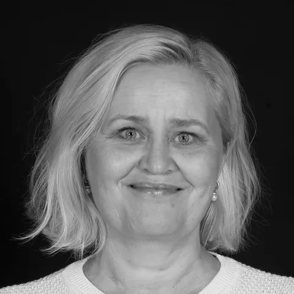
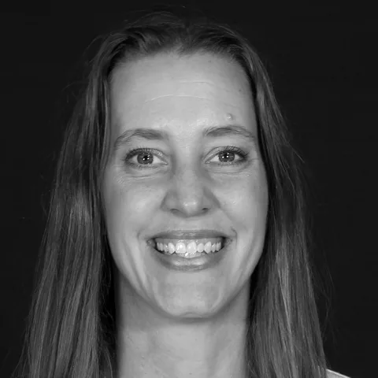
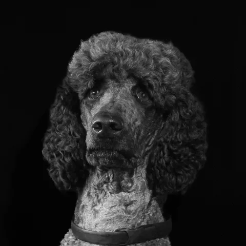
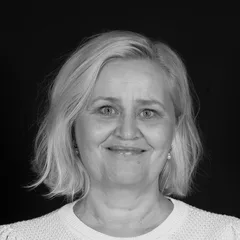
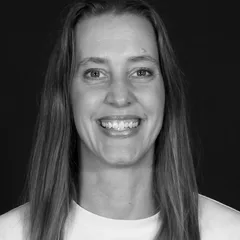
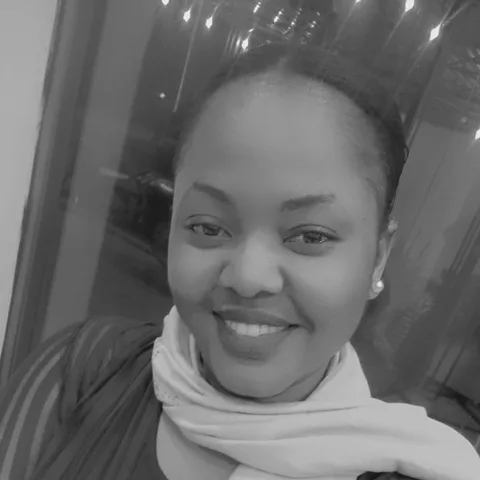

B: svart/hvitt
Alle fire i svart/hvitt (Guro finnes bare i svart/hvitt fra Marit).
Om oss

Marit Byfuglien
Daglig leder
Overordnet ansvar for drift, ansatte og kunder.

Mari Pedersen
Markedsansvarlig
Ansvar for salg, tilbud og kundeoppfølging.

Guro Klingenberg Schei
Operativ leder
Ansvar for drift, bemanning og opplæring.

Åge
Trivselsansvarlig
Deltidsansvarlig for ekstra trivsel på kontoret.
Kontakt

Marit ByfuglienDaglig leder
Mari PedersenMarkedsansvarlig
Jobb hos oss

Jeg kom til Oslo for å studere og begynte å jobbe i Clean Unit i 2023. Nå rengjør jeg en fast barnehage som jeg trives veldig godt i.